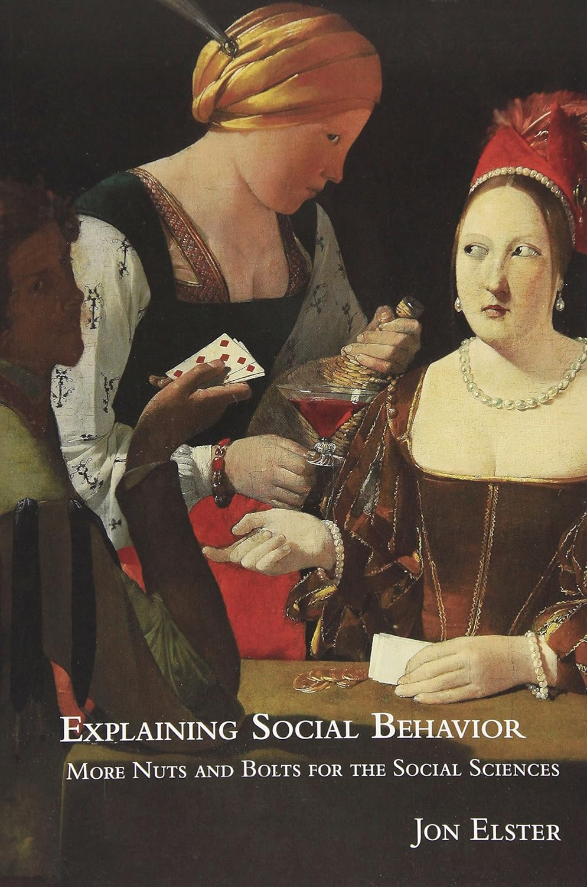
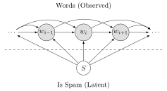
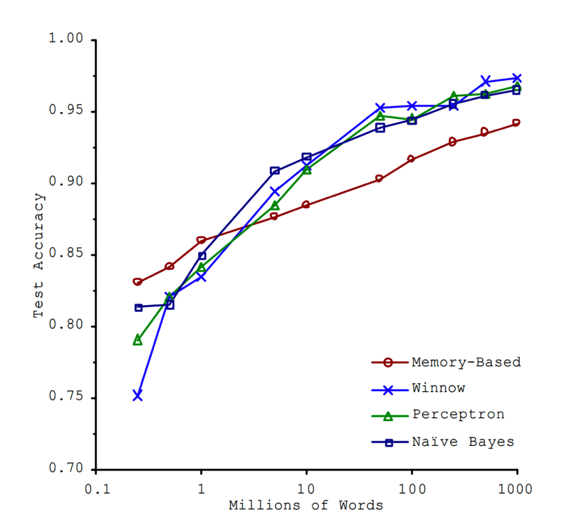
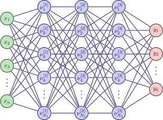

Code
source("../_globals.r")DSAN 5000: Data Science and Analytics
Section 02
source("../_globals.r")cb_palette = ["#E69F00", "#56B4E9", "#009E73", "#F0E442", "#0072B2", "#D55E00", "#CC79A7"]
from IPython.display import Markdown
def disp(df, floatfmt='g', include_index=True):
return Markdown(
df.to_markdown(
floatfmt=floatfmt,
index=include_index
)
)
def summary_to_df(summary_obj, corner_col = ''):
reg_df = pd.DataFrame(summary_obj.tables[1].data)
reg_df.columns = reg_df.iloc[0]
reg_df = reg_df.iloc[1:].copy()
# Save index col
index_col = reg_df['']
# Drop for now, so it's all numeric
reg_df.drop(columns=[''], inplace=True)
reg_df = reg_df.apply(pd.to_numeric)
my_round = lambda x: round(x, 2)
reg_df = reg_df.apply(my_round)
numeric_cols = reg_df.columns
# Add index col back in
reg_df.insert(loc=0, column=corner_col, value=index_col)
# Sigh. Have to escape | characters?
reg_df.columns = [c.replace("|","\|") for c in reg_df.columns]
return reg_df\[ \DeclareMathOperator*{\argmax}{argmax} \DeclareMathOperator*{\argmin}{argmin} \newcommand{\bigexpect}[1]{\mathbb{E}\mkern-4mu \left[ #1 \right]} \newcommand{\definedas}{\overset{\text{defn}}{=}} \newcommand{\definedalign}{\overset{\phantom{\text{defn}}}{=}} \newcommand{\eqeventual}{\overset{\text{eventually}}{=}} \newcommand{\expect}[1]{\mathbb{E}[#1]} \newcommand{\expectsq}[1]{\mathbb{E}^2[#1]} \newcommand{\fw}[1]{\texttt{#1}} \newcommand{\given}{\mid} \newcommand{\green}[1]{\color{green}{#1}} \newcommand{\heads}{\outcome{heads}} \newcommand{\iqr}{\text{IQR}} \newcommand{\kl}{\text{KL}} \newcommand{\lik}{\mathcal{L}} \newcommand{\mle}{\textsf{ML}} \newcommand{\orange}[1]{\color{orange}{#1}} \newcommand{\outcome}[1]{\textsf{#1}} \newcommand{\param}[1]{{\color{purple} #1}} \newcommand{\paramDist}{\param{\boldsymbol\theta_\mathcal{D}}} \newcommand{\pgsamplespace}{\{\green{1},\green{2},\green{3},\purp{4},\purp{5},\purp{6}\}} \newcommand{\prob}[1]{P\left( #1 \right)} \newcommand{\purp}[1]{\color{purple}{#1}} \newcommand{\red}[1]{\color{red}#1} \newcommand{\spacecap}{\; \cap \;} \newcommand{\spacewedge}{\; \wedge \;} \newcommand{\tails}{\outcome{tails}} \newcommand{\Var}[1]{\text{Var}[#1]} \newcommand{\bigVar}[1]{\text{Var}\mkern-4mu \left[ #1 \right]} \]
Today’s Planned Schedule (Section 02):
| Start | End | Topic | Recording | |
|---|---|---|---|---|
| Lecture | 12:30pm | 1:00pm | Student Presentations! → | |
| 1:30pm | 2:00pm | What We Learned → | ||
| 1:30pm | 2:00pm | What We Should Learn Over Break → | ||
| Break! | 2:00pm | 2:10pm | ||
| 2:10pm | 2:40pm | Looking Forward! → |

| id | name | |
|---|---|---|
| 0 | K. Desbrow | kd9@dailymail.com |
| 1 | D. Minall | dminall1@wired.com |
| 2 | C. Knight | ck2@microsoft.com |
| 3 | M. McCaffrey | mccaf4@nhs.uk |
| year | month | points |
|---|---|---|
| 2023 | Jan | 65 |
| 2023 | Feb | |
| 2023 | Mar | 42 |
| 2023 | Apr | 11 |
| id | date | rating | num_rides |
|---|---|---|---|
| 0 | 2023-01 | 0.75 | 45 |
| 0 | 2023-02 | 0.89 | 63 |
| 0 | 2023-03 | 0.97 | 7 |
| 1 | 2023-06 | 0.07 | 10 |
| id | Source | Target | Weight |
|---|---|---|---|
| 1 | IGF2 | IGF1R | 1 |
| 2 | IGF1R | TP53 | 2 |
| 3 | TP53 | EGFR | 0.5 |
Fake data via Mockaroo and Random.org. Protein-protein interaction network from Agrawal, Zitnik, and Leskovec (2018)
| How is data loaded? | Solution | Example | ||
|---|---|---|---|---|
| üòä | Easy | Data in HTML source | ‚ÄúView Source‚Äù | |
| üòê | Medium | Data loaded dynamically via API | ‚ÄúView Source‚Äù, find API call, scrape programmatically | |
| üò≥ | Hard | Data loaded dynamically [internally] via web framework | Use Selenium |
import pandas as pd
import numpy as np
import matplotlib.pyplot as plt
import seaborn as sns
sns.set_theme(style="ticks")
# https://towardsdatascience.com/how-to-use-your-own-color-palettes-with-seaborn-a45bf5175146
sns.set_palette(sns.color_palette(cb_palette))
# Load the example dataset for Anscombe's quartet
anscombe_df = sns.load_dataset("anscombe")
#print(anscombe_df)
# Show the results of a linear regression within each dataset
anscombe_plot = sns.lmplot(
data=anscombe_df, x="x", y="y", col="dataset", hue="dataset",
col_wrap=4, palette="muted", ci=None,
scatter_kws={"s": 50, "alpha": 1},
height=3
);
anscombe_plot;

# Compute dataset means
my_round = lambda x: round(x,2)
data_means = anscombe_df.groupby('dataset').agg(
x_mean = ('x', np.mean),
y_mean = ('y', np.mean)
).apply(my_round)
disp(data_means, floatfmt='.2f')| dataset | x_mean | y_mean |
|---|---|---|
| I | 9.00 | 7.50 |
| II | 9.00 | 7.50 |
| III | 9.00 | 7.50 |
| IV | 9.00 | 7.50 |
# Compute dataset SDs
data_sds = anscombe_df.groupby('dataset').agg(
x_mean = ('x', np.std),
y_mean = ('y', np.std),
).apply(my_round)
disp(data_sds, floatfmt='.2f')| dataset | x_mean | y_mean |
|---|---|---|
| I | 3.32 | 2.03 |
| II | 3.32 | 2.03 |
| III | 3.32 | 2.03 |
| IV | 3.32 | 2.03 |
import tabulate
from IPython.display import HTML
corr_matrix = anscombe_df.groupby('dataset').corr().apply(my_round)
#Markdown(tabulate.tabulate(corr_matrix))
HTML(corr_matrix.to_html())| x | y | ||
|---|---|---|---|
| dataset | |||
| I | x | 1.00 | 0.82 |
| y | 0.82 | 1.00 | |
| II | x | 1.00 | 0.82 |
| y | 0.82 | 1.00 | |
| III | x | 1.00 | 0.82 |
| y | 0.82 | 1.00 | |
| IV | x | 1.00 | 0.82 |
| y | 0.82 | 1.00 |

import statsmodels.formula.api as smf
summary_dfs = []
for cur_ds in ['I','II','III','IV']:
ds1_df = anscombe_df.loc[anscombe_df['dataset'] == "I"].copy()
# Fit regression model (using the natural log of one of the regressors)
results = smf.ols('y ~ x', data=ds1_df).fit()
# Get R^2
rsq = round(results.rsquared, 2)
# Inspect the results
summary = results.summary()
summary.extra_txt = None
summary_df = summary_to_df(summary, corner_col = f'Dataset {cur_ds}<br>R^2 = {rsq}')
summary_dfs.append(summary_df)
disp(summary_dfs[0], include_index=False)| Dataset I R^2 = 0.67 |
coef | std err | t | P>|t| | [0.025 | 0.975] |
|---|---|---|---|---|---|---|
| Intercept | 3 | 1.12 | 2.67 | 0.03 | 0.46 | 5.54 |
| x | 0.5 | 0.12 | 4.24 | 0 | 0.23 | 0.77 |
disp(summary_dfs[1], include_index=False)| Dataset II R^2 = 0.67 |
coef | std err | t | P>|t| | [0.025 | 0.975] |
|---|---|---|---|---|---|---|
| Intercept | 3 | 1.12 | 2.67 | 0.03 | 0.46 | 5.54 |
| x | 0.5 | 0.12 | 4.24 | 0 | 0.23 | 0.77 |
disp(summary_dfs[2], include_index=False)| Dataset III R^2 = 0.67 |
coef | std err | t | P>|t| | [0.025 | 0.975] |
|---|---|---|---|---|---|---|
| Intercept | 3 | 1.12 | 2.67 | 0.03 | 0.46 | 5.54 |
| x | 0.5 | 0.12 | 4.24 | 0 | 0.23 | 0.77 |
disp(summary_dfs[3], include_index=False)| Dataset IV R^2 = 0.67 |
coef | std err | t | P>|t| | [0.025 | 0.975] |
|---|---|---|---|---|---|---|
| Intercept | 3 | 1.12 | 2.67 | 0.03 | 0.46 | 5.54 |
| x | 0.5 | 0.12 | 4.24 | 0 | 0.23 | 0.77 |
Guessing House Prices:
Guessing Word Frequencies:

\[ \begin{align*} &\Pr(S = 1 \mid w_5 = \texttt{dollars}, w_4 = \texttt{million}) \\ &> \Pr(S = 1 \mid w_5 = \texttt{dollars}, w_4 = \texttt{octopus}) \end{align*} \]

\[ \Pr(S = 1 \mid w_5) \perp \Pr(S = 1 \mid w_4) \]



library(tidyverse)
library(ggforce)
library(MASS)
library(patchwork)
N <- 50
Mu1 <- c(0.2, 0.8)
Mu2 <- c(0.8, 0.2)
sigma <- 1/24
# Data for concentric circles
circle_df <- tribble(
~x0, ~y0, ~r, ~Cluster, ~whichR,
Mu1[1], Mu1[2], sqrt(sigma), "C1", 1,
Mu2[1], Mu2[2], sqrt(sigma), "C2", 1,
Mu1[1], Mu1[2], 2 * sqrt(sigma), "C1", 2,
Mu2[1], Mu2[2], 2 * sqrt(sigma), "C2", 2,
Mu1[1], Mu1[2], 3 * sqrt(sigma), "C1", 3,
Mu2[1], Mu2[2], 3 * sqrt(sigma), "C2", 3
)
#print(circle_df)
Sigma <- matrix(c(sigma,0,0,sigma), nrow=2)
#print(Sigma)
x1_df <- as_tibble(mvrnorm(N, Mu1, Sigma))
x1_df <- x1_df |> mutate(
Cluster='C1'
)
x2_df <- as_tibble(mvrnorm(N, Mu2, Sigma))
x2_df <- x2_df |> mutate(
Cluster='C2'
)
cluster_df <- bind_rows(x1_df, x2_df)
cluster_df <- cluster_df |> rename(
x=V1, y=V2
)
known_plot <- ggplot(cluster_df) +
geom_point(
data = circle_df,
aes(x=x0, y=y0)
) +
geom_circle(
data = circle_df,
aes(x0=x0, y0=y0, r=r, fill=Cluster),
linewidth = g_linewidth,
alpha = 0.25
) +
geom_point(
data=cluster_df,
aes(x=x, y=y, fill=Cluster),
size = g_pointsize / 2,
shape = 21
) +
dsan_theme("full") +
coord_fixed() +
labs(
x = "x",
y = "y",
title = "Data with Known Clusters"
) +
scale_fill_manual(values=c(cbPalette[2], cbPalette[1], cbPalette[3], cbPalette[4])) +
scale_color_manual(values=c(cbPalette[1], cbPalette[2], cbPalette[3], cbPalette[4]))
unknown_plot <- ggplot(cluster_df) +
geom_point(
data=cluster_df,
aes(x=x, y=y),
size = g_pointsize / 2,
#shape = 21
) +
dsan_theme("full") +
coord_fixed() +
labs(
x = "x",
y = "y",
title = "Same Data with Unknown Clusters"
)
cluster_df |> write_csv("assets/cluster_data.csv")
known_plot + unknown_plot


Probability that RV \(X_i\) takes on value \(\mathbf{v}\):
\[ \begin{align*} &\Pr(X_i = \mathbf{v} \mid \param{\boldsymbol\theta_\mathcal{D}}) = \varphi_2(\mathbf{v}; \param{\boldsymbol\mu}, \param{\mathbf{\Sigma}}) \end{align*} \]
where \(\varphi_2(\mathbf{v}; \boldsymbol\mu, \mathbf{\Sigma})\) is pdf of \(\boldsymbol{\mathcal{N}}_2(\boldsymbol\mu, \mathbf{\Sigma})\).
Let \(\mathbf{X} = (X_1, \ldots, X_N)\), \(\mathbf{V} = (\mathbf{v}_1, \ldots, \mathbf{v}_N)\)
Probability that RV \(\mathbf{X}\) takes on values \(\mathbf{V}\):
\[ \begin{align*} &\Pr(\mathbf{X} = \mathbf{V} \mid \param{\boldsymbol\theta_\mathcal{D}}) \\ &= \Pr(X_1 = \mathbf{v}_1 \mid \paramDist) \times \cdots \times \Pr(X_N = \mathbf{v}_N \mid \paramDist) \end{align*} \]
If only we had some sort of method for estimating which values of our unknown parameters \(\paramDist\) are most likely to produce our observed data \(\mathbf{X}\)
The diagram on the previous slide gave us an equation
\[ \begin{align*} \Pr(\mathbf{X} = \mathbf{V} \mid \param{\boldsymbol\theta_\mathcal{D}}) = \Pr(X_1 = \mathbf{v}_1 \mid \paramDist) \times \cdots \times \Pr(X_N = \mathbf{v}_N \mid \paramDist) \end{align*} \]
And we know that, when we consider the data as given and view this probability as a function of the parameters, we write it as
\[ \begin{align*} \lik(\mathbf{X} = \mathbf{V} \mid \param{\boldsymbol\theta_\mathcal{D}}) = \lik(X_1 = \mathbf{v}_1 \mid \paramDist) \times \cdots \times \lik(X_N = \mathbf{v}_N \mid \paramDist) \end{align*} \]
We want to find the most likely \(\paramDist\), that is, \(\boldsymbol\theta^*_\mathcal{D} = \argmax_{\paramDist}\mathcal{L}(\mathbf{X} = \mathbf{V} \mid \paramDist)\)
This value \(\boldsymbol\theta^*_\mathcal{D}\) is called the Maximum Likelihood Estimate of \(\paramDist\), and is easy to find using calculus tricks2

Probability \(X_i\) takes on value \(\mathbf{v}\):
\[ \begin{align*} &\Pr(X_i = \mathbf{v} \mid \param{C_i} = c_i; \; \param{\boldsymbol\theta_\mathcal{D}}) \\ &= \begin{cases} \varphi_2(v; \param{\boldsymbol\mu_1}, \param{\mathbf{\Sigma}}) &\text{if }c_i = 1 \\ \varphi_2(v; \param{\boldsymbol\mu_2}, \param{\mathbf{\Sigma}}) &\text{otherwise,} \end{cases} \end{align*} \]
where \(\varphi_2(v; \boldsymbol\mu, \mathbf{\Sigma})\) is pdf of \(\boldsymbol{\mathcal{N}}_2(\boldsymbol\mu, \mathbf{\Sigma})\).
Let \(\mathbf{C} = (\underbrace{C_1}_{\text{RV}}, \ldots, C_N)\), \(\mathbf{c} = (\underbrace{c_1}_{\mathclap{\text{scalar}}}, \ldots, c_N)\)
\[ \begin{align*} &\Pr(\mathbf{X} = \mathbf{V} \mid \param{\mathbf{C}} = \mathbf{c}; \; \param{\boldsymbol\theta_\mathcal{D}}) \\ &= \Pr(X_1 = \mathbf{v}_1 \mid \param{C_1} = c_1; \; \paramDist) \times \cdots \times \Pr(X_N = \mathbf{v}_N \mid \param{C_N} = c_N; \; \paramDist) \end{align*} \]

Each node \(\nu_i^{[\ell]}\) in the network:
\[ \text{output}^{[\ell]}_i = \sigma(w^{[\ell]}_i \cdot \text{input} + b^{[\ell]}_i) \]
(But we might have the opposite result for a marine economist… rly makes u think  )↩︎
)↩︎
If you’re in my DSAN5100 class, then you already know this! If not, check out the MLE slides here for more details↩︎